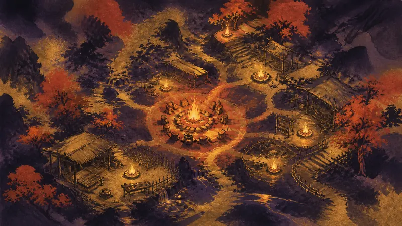
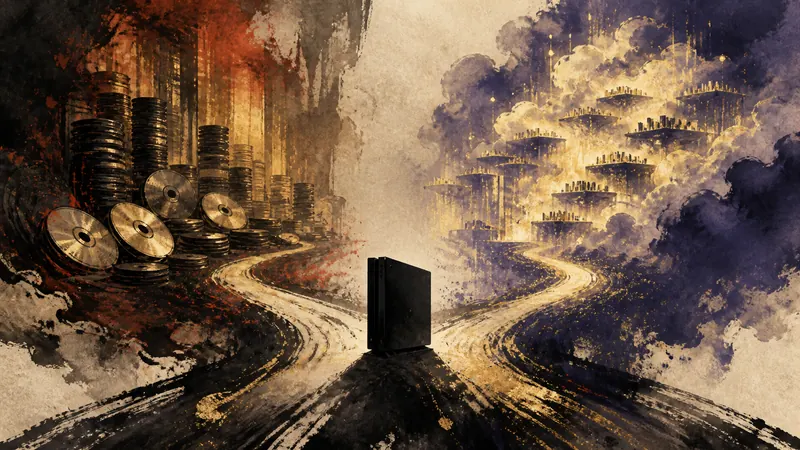
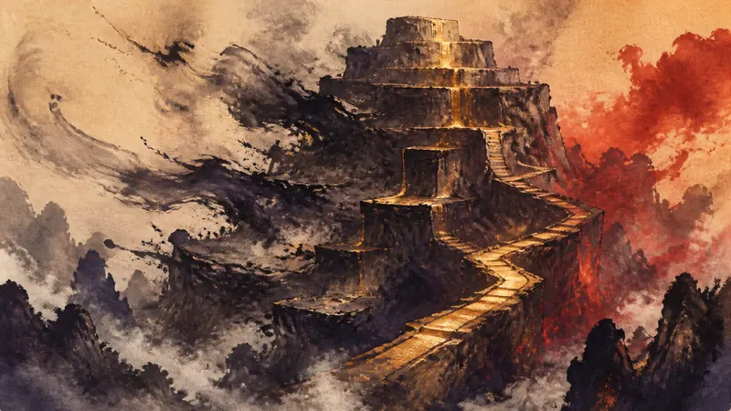
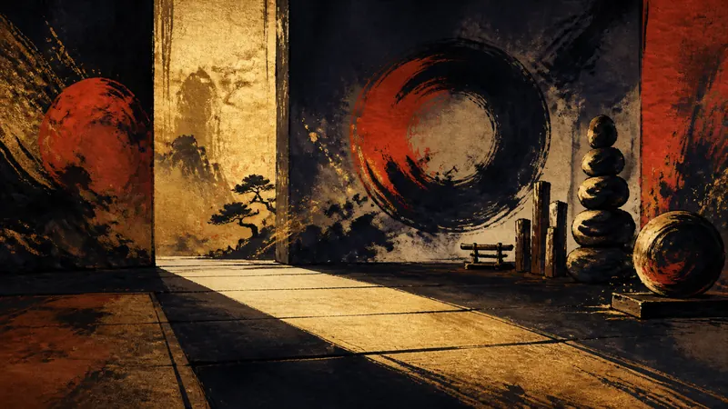
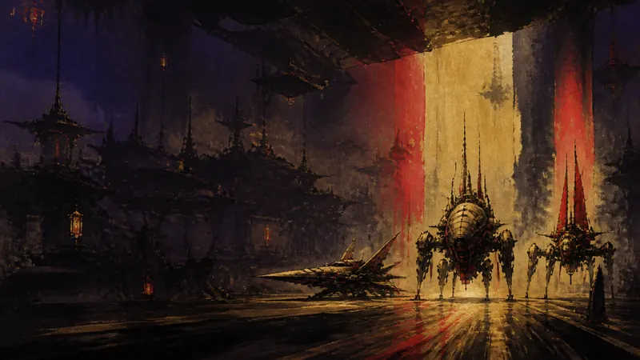

4Gamer.net

A single themed page brings survival and crafting games together, but convenient indexing does not mean every title is worth buying immediately.
Read the original
Eurogamer

There is still no answer on whether Project Helix will retain a disc drive, leaving players’ physical collections facing different next-generation console choices.
Read the original
PC Gamer

When paid boosting is enough to change the cutoff for the top 1% of rewards, cleaning up the leaderboard is about more than deleting a few anomalous records.
Read the original
巴哈姆特 GNN

Two PlayStation programs are scheduled for the same night, making the focus not only the list of new games but also how players choose to allocate their anticipation.
Read the original
4Gamers

To perform Chun-Li's leg techniques, Karina Liang trained for two hours every day and increased the circumference of each thigh by 6.5 centimeters.
Read the original
4Gamers

SD Gundam G Generation Eternal brings summons, a returning tower, 3,000 diamonds, and a limited-time strong enemy into one update.
Read the original